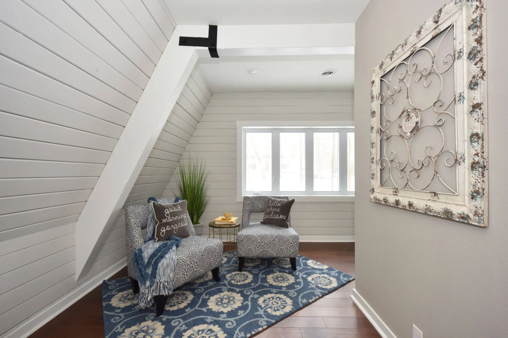

Not every space problem calls for new square footage. Sometimes a basement finish or a smarter layout inside the existing footprint solves the same need for less money and disruption. But when a household has genuinely outgrown its home, or when the only usable space left is underground or awkwardly configured, building out becomes the more sensible path. This article walks through the questions that separate a true addition need from a remodel-in-place opportunity, using the kinds of factors Waukesha homeowners actually encounter: lot size, setback rules, existing foundation condition, and how long the family plans to stay. It is not a sales pitch for bigger construction. It is a way to test your own assumptions before you call anyone for a quote, so the conversation you have with a design-build professional or general contractor starts from a clearer picture of what you actually need.

Step one: define the shortage, not the solution
Homeowners often walk into a consultation already committed to a specific answer, like a second-story addition, when the real problem is something narrower, like a lack of a home office or a cramped primary bathroom. Before evaluating an addition, write down exactly what is missing: a bedroom, a bathroom, more kitchen workspace, or an accessible ground-floor suite for an aging parent. Then ask whether that need could be met by reorganizing existing rooms, converting a basement, or bumping out a single wall rather than adding a full addition. A home addition in Waukesha WI typically makes the most sense when the shortage is structural, meaning there simply is not enough enclosed square footage anywhere in the house to solve the problem, not when the issue is poor layout or an unfinished level that could be converted instead. If you have unfinished basement space, it is worth ruling that out first, since finishing existing volume is usually less disruptive and less expensive per square foot than building new exterior walls and foundation.
Step two: check the constraints an addition depends on
Additions live or die on a handful of practical factors that homeowners can check before investing time in design work. Lot coverage and setback requirements vary by municipality in the greater Waukesha area, so the buildable footprint on your lot may be smaller than it looks, especially on corner lots or properties with easements. Existing foundation and roofline also matter: a second-story addition requires the structure below to support new loads, which sometimes means reinforcement work that adds cost and time beyond the visible addition itself. Utility access, meaning how far electrical, plumbing, and HVAC systems need to extend to reach the new space, affects both budget and construction sequencing. Finally, consider how long you plan to stay in the home. An addition is a multi-month undertaking with real disruption to daily life, so it tends to make more sense for households planning to stay put for years rather than those who might sell within a short window. If any of these constraints look unfavorable, a design-build contractor can often identify that early, before design fees are spent on a concept that will not fit the lot or budget.
Step three: compare addition against remodel-in-place alternatives
Once you know the real need and have checked the physical constraints, weigh the addition against alternatives directly. Finishing an unfinished basement adds livable square footage without changing the home's footprint or roofline, and it is often the fastest way to add a bedroom, family room, or home office if the space already exists below grade. A kitchen or bathroom remodel that reconfigures existing walls can sometimes recover meaningful function, like adding an island or a larger shower, without expanding the building. Whole-house remodeling that touches multiple rooms in sequence can also solve layout problems that feel like a space shortage but are really a flow problem. An addition remains the right call when none of these alternatives create enough usable space, such as needing an additional bedroom and bathroom suite for a growing or multigenerational household. A design-build firm that offers both remodeling and addition services, such as Property ReVision, can walk through these tradeoffs as part of an initial planning conversation, since the same team handling the design work also understands what is realistic to build within your lot and budget.
Questions this guide answers
How do I know if I need an addition instead of finishing my basement?
If your unfinished basement can supply the room or function you are missing, such as a bedroom or office, finishing it is usually less disruptive and less costly than building an addition. An addition becomes the better option when there is no existing unfinished space that can meet the need, or when the need requires main-floor accessibility that a basement cannot provide.
What lot factors could block a home addition in Waukesha?
Setback requirements, lot coverage limits, and easements vary by municipality and can restrict how much new footprint is allowed on a given lot. Corner lots and smaller parcels are especially likely to run into these limits, so it is worth confirming buildable area before committing to an addition concept.
Does a second-story addition cost less than a ground-floor addition?
Not necessarily. A second-story addition avoids expanding the foundation footprint, but it often requires structural reinforcement of the existing lower floor and roof to support the new load, which can add cost and complexity that offsets the savings from not extending the foundation.